Como Fazer ordens digitais
Passe o mouse em ferramentas e clique em baixar apps

Baixar APP da Ordem Digital
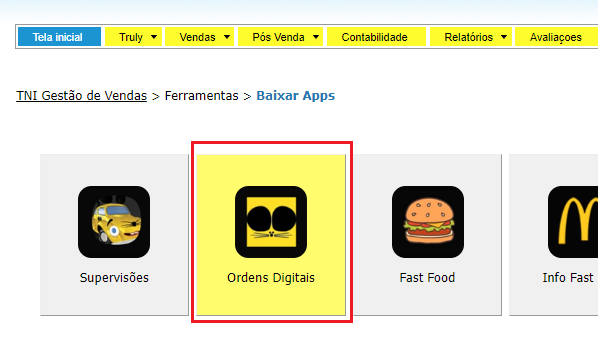
Ao entrar no aplicativo pela primeira vez no dia, o técnico é responderá
perguntas sobre os equipamentos e produtos necessários para realizar os
serviços agendados e para poder ter um dia produtivo, as respostas são
obrigatórias.
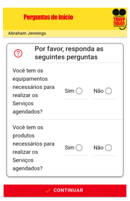
Na tela inicial você verá as Ordens de Serviço Sincronizadas
• Como relatado acima, você pode completar as ordens do dia anterior,
do dia atual, ou do dia seguinte (Ontem, Hoje e Amanhã).
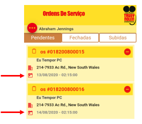
As ordens são categorizadas pelas seguintes guias:
- Pendentes: Ordens que não foram realizadas.
- Fechadas: Ordens que foram realizadas e assinadas pelo cliente que
ainda não foram enviadas para o servidor.
- Subidas: Ordens que foram fechadas e enviadas ao servidor e você
poderá ver o PDF gerado.
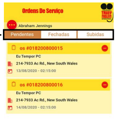
Ao entrar em uma Ordem de Serviço você verá todas as seções que a
compõem e os campos que deverão ser respondidos. Algumas seções são
opcionais e outras são obrigatórias. Para entrar em cada seção você deve
clicar nela
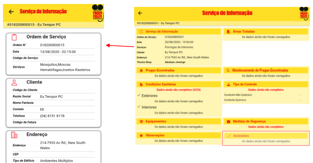
Ao entrar em uma Ordem de Serviço você verá todas as seções que a
compõem e os campos que deverão ser respondidos. Algumas seções são
opcionais e outras são obrigatórias. Para entrar em cada seção você deve
clicar nela.
Dependendo do tipo de conta, você poderá encontrar diferentes áreas
para tratar. Abaixo estão as áreas que você encontrará no aplicativo com
base no tipo da conta:
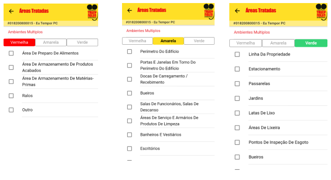
Dependendo do tipo de conta, você poderá encontrar diferentes áreas
para tratar. Abaixo estão as áreas que você encontrará no aplicativo com
base no tipo da conta:
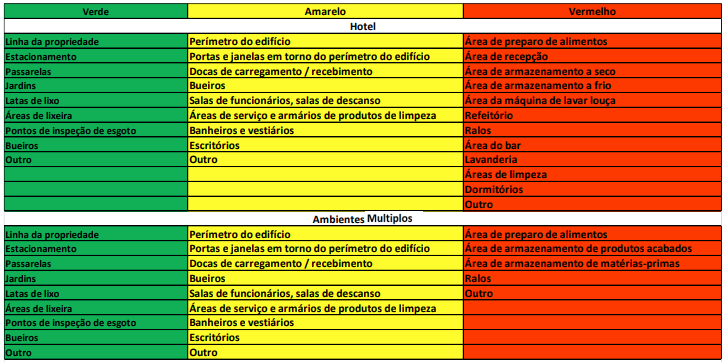
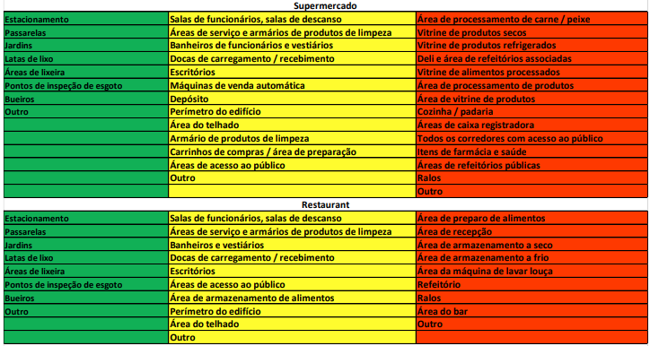
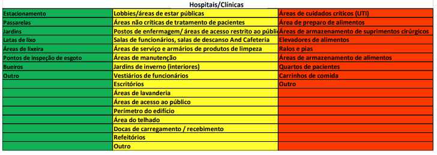
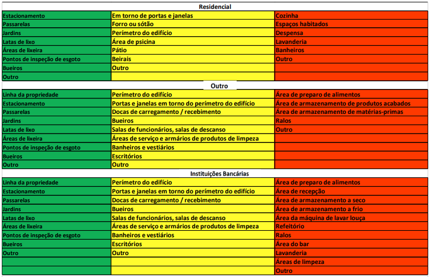
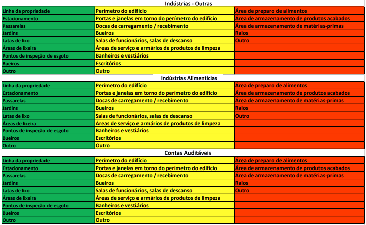
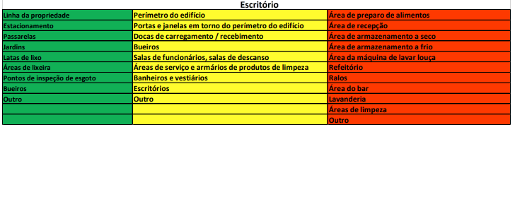
Pragas encontradas (Opcional) :Nesta seção você deverá responder sobre as
pragas encontradas e em quais áreas foram encontradas. Para isso você deverá
pressionar o botão com o ícone de inseto em cada área, a fim de selecionar as
pragas observadas.
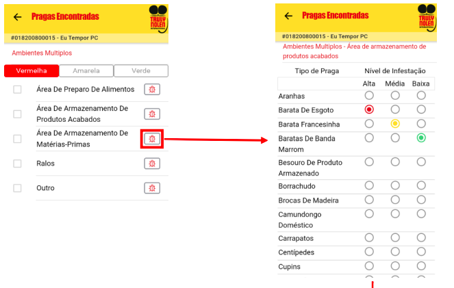
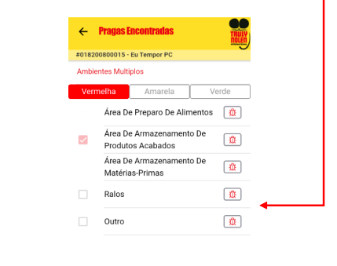
Condições Sanitárias (Requeridas): Nesta seção todas as perguntas
deverão ser respondidas com Sim, Não, ou Não Aplicável (N/A).
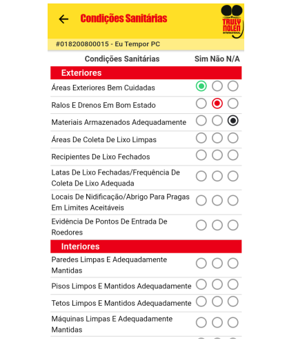
Tipo de controle (Obrigatório): Nesta seção você deverá responder ao
Tipo de Controle realizado no serviço, podendo ser Químico e Não
Químico.
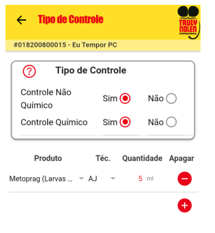
Equipamento (Opcional): Nesta seção você deverá selecionar o
Equipamento instalado na realização do serviço este, você poderá
adicionar itens com o Botão , você deverá selecionar o
Equipamento, Técnico que o instalou e o número de unidades
instalada.
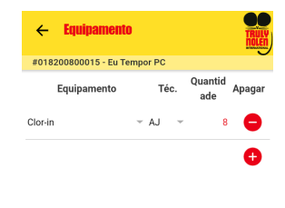
Medidas de Segurança (Obrigatória): Ambas as perguntas deverão ser
respondidas.
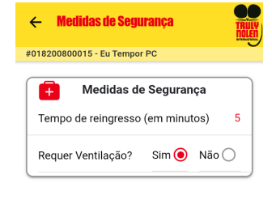
Medidas de Segurança (Obrigatória): Ambas as perguntas deverão ser
respondidas.
Observações (Opcional): Nesta seção você poderá escrever algumas
observações relacionadas ao serviço realizado. Se o técnico falou com
o cliente, tudo o que foi discutido deverá ser escrito nesta seção.
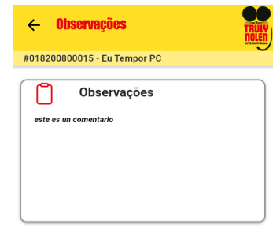
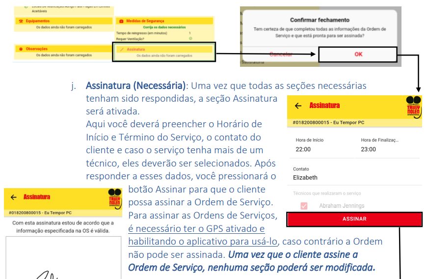
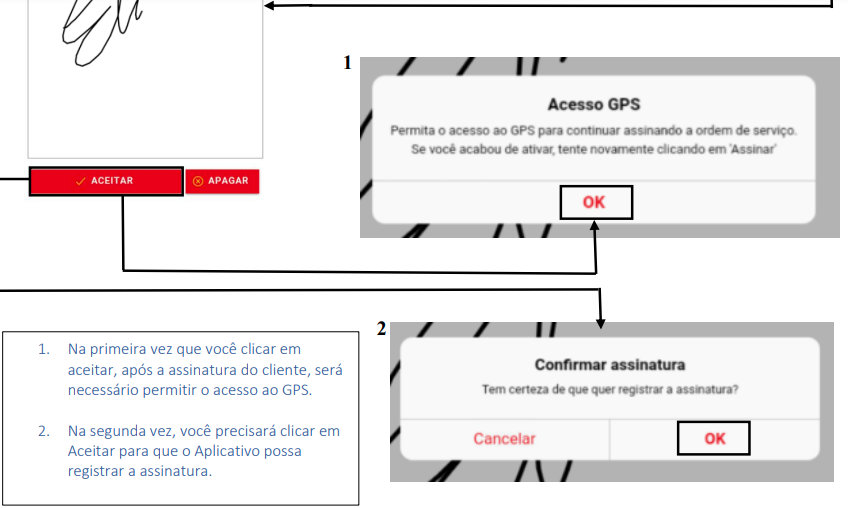
.
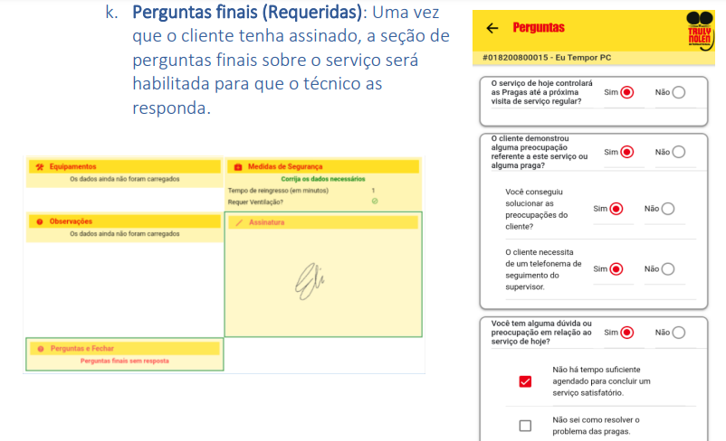

Como criar um relatorio de Supervisão
Passe o mouse em "Pós Vendas" e clique em "Supervisões"
Clique em "DADOS PARA SINCRONIZAR"
Escolha o supervisor técnico.
Após escolher o supervisor técnico clique em adicionar serviço.
Selecione o serviço a ser atribuido ao supervisor.
Vá em ferramentas e clique em "baixar apps"
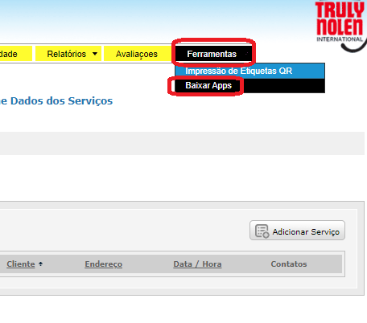
Baixe o APP de supervisões
Faça login no APP. Baixe os Dados do APP.
Em seguida, importe os dados sincronizados ao seu dispositivo, como mostrado abaixo.
Clique no sinal de "+" para criar um nova supervisão.
Preencha os campos.

Adicionar fotos da supervisão.
Responda as perguntas e siga para a proxima etapa.
Responda as perguntas e siga para a proxima etapa.
Responda as perguntas e siga para a proxima etapa.
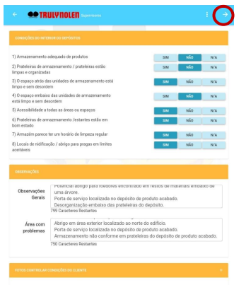
Preencha os campos. E siga para proxima etapa.
Na página seguinte, preencha todas as perguntas referentes ao Serviço de Controle de
Pragas em
Áreas Interiores, e tire fotos, se necessário, depois selecione a seta para continuar. Se lembre de
anotar
todas as informações necessárias e áreas com problemas, caso algum problema tenha sido encontrado
(vulnerabilidades, condições favoráveis) ao responder as perguntas.

Responda as perguntas. E siga.
Responda as perguntas. E siga.
Clique em concluir supervisão.
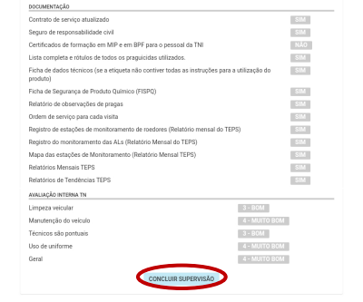
Clique na setinha para importar os dados para o sistema TNI
Vá para pos vendas : Supervisões
Selecione as pragas que foram encontradas durante a supervisão no
estabelecimento do cliente.
Ao usar o Sistema de Gestão da TNI para finalizar o relatório, é possível excluir
fotos tiradas com o
Aplicativo ou adicionar outras fotos, caso necessário. Nesta página é possível adicionar quantas
fotos quiser, já
que aqui não há um limite de fotos.
Depois de todos os campos serem preenchidos, você pode revisá-los clicando no
relatório de
diagnóstico (circulado em vermelho). Se o cliente não for uma conta TEPS, você pode salvar o
relatório
como um documento em PDF ou imprimí-lo e enviá-lo ao cliente.
Se o cliente for uma CONTA TEPS, depois que o relatório for revisado e estiver pronto
para ser
enviado à página VIP do cliente, clique em Entregues(mostrado pela seta na imagem acima). Então esta
supervisão aparecerá, conforme mostrado abaixo
Quando o relatório de supervisão estiver aparecendo como “entregue”, quer dizer que
ele foi
carregado automaticamente à página VIP, como mostrado abaixo.
Na Página VIP, se você clicar na seta abaixo do relatório de Supervisão de um cliente,
você poderá
baixá-lo. O relatório de supervisão terá o mesmo layout do que está apresentado ao final deste
documento